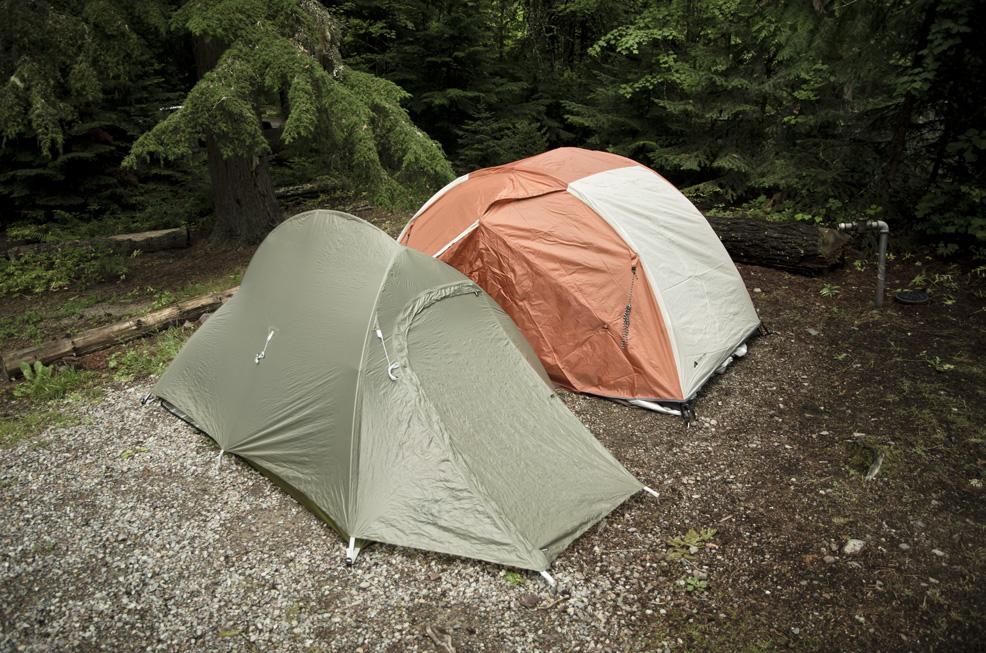
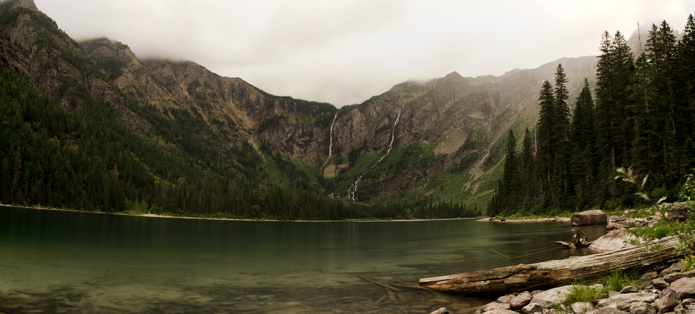
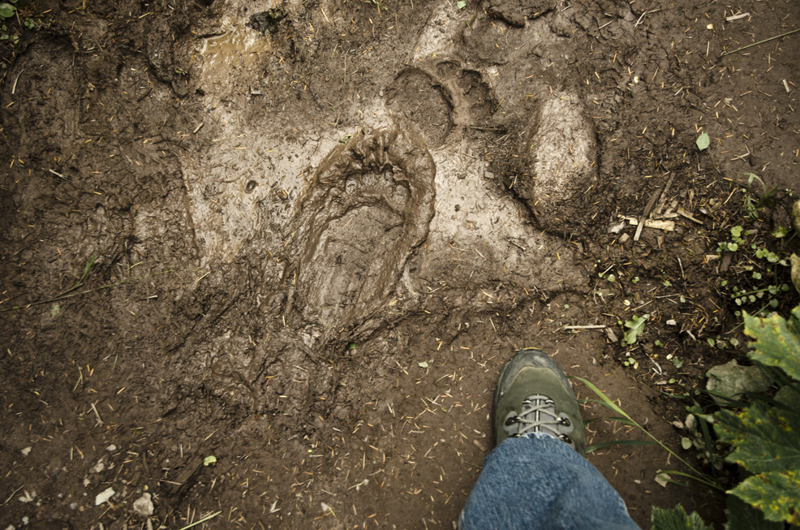

“You can't shake off fear but you can acknowledge and face it. The other choice, stay frozen and become the prey.”
It has been 2 years since I left Montana. I remember the days when I started craving for outdoor adventure like it was yesterday. Months before I left the state for a new adventure, I joined to as many outdoor trips as I can. I left the weekend alcohol life for the unforgettable adventures (I am better off remembering my weekends than waking up trying to figure out what happened). Two of those trips were to Glacier National Park. Both trips were memorable, the amazing scenery, challenging temperature, and painful long snowshoeing walk. I wished to come back and see the place again before the glaciers melt due to climate change.
While I was away, I made this silly bucket list. Some of them are: punch a shark's face, buy a brand new car with duffel bag full of $20 (it can be a Honda Fit or Toyota Yaris, I am not a Bugatti or Ferrari person) and boxing with a bear. The item that is far from reality(I think)…boxing with a bear.
This past week I visited Montana to see some old friends and also visited Glacier National Park. My friends and I camped for 3 nights. Most of it was just hanging out, watching the view, and relax. It is such an amazing weekend and it is best to disconnect from devices after months of learning how to create websites.
On the last day of camping, I decided to see Avalanche Lake while my friends went to a different place. Hiking towards Avalanche Lake is one of the popular sites to see for tourists, so there is a good amount of hikers.
After a few miles of hike, I have reached the place. It may not have those glacier-ish views but it is still beautiful. I am glad I went and saw it. I saw some people walking on the side of the lake to have a closer view of the mountain and noticed that there is a waterfall across the lake. I decided to walk towards that direction to take a look. After a while, I sat down to rest and eat lunch. I brought out my Salmon Sandwich and ate it while enjoying the view. I also met our camping neighbors who are really nice people and showed me the video of their Buffalo (maybe Yak or Bison, I don't know they all look the same) encounter in Yellowstone National Park. After our little conversation, we parted ways and I sat back down and finish half of the Salmon Sandwich.
Since I told my friends that I'm going for only 4 hours, I decided to head back to the parking area so my friends could pick me up. I saw this trail by the lake that could take me back faster than walking on the rocks. So I decided to cut through it and started with a fast pace. While on the way back, I passed an animal print. I thought it was a wolf's track but realized it was pretty big for a wolf. I stopped and walked back to it again.
I suddenly went into fight-or-flight mode because I realized that it was a bear track. I have no idea how fresh the track is but the creature could be somewhere near. I also realized that I am in the track alone, not hearing people around, smelling the Salmon Sandwich from my mouth, and also hoping I sealed the half eaten Salmon Sandwich in my pack. While freaking out, I tried to put my foot beside it and take a picture of it. To show it to friends and confirm if it is really a bear track, later on if I survive.
While heading back, all I can think of is I am not yet prepared for the face off. All I can do at the moment is fight with a bear spray and use my backpack for diversion. This could be the end of my story. It is either that I am going to look like a pitiful victim in the news or a warrior who fought until the end (the creature's dead body have to be nearby). I flinched with fear a couple of times because of brown boulders on the way, which I imagined at the time as a possible bear encounter.
Finally, thank God, I got out safe without a single bear encounter. I showed the picture to my friend and told me it was a fresh track. It was quite an experience and next time I'll be prepared (no Salmon Sandwich for meals) for the final battle.